| 日付 | 2008年3月29日（土） |
|---|---|
| 山域 | 奥武蔵 |
| メンバー | 単独 |
| 山行形態 | 日帰り |
| アクセス | 電車、バス |
| ルート (Map) | 名郷→武川岳→二子山→芦ヶ久保駅 |
今日は関東全域晴れ予報。
明日山に行く予定があるが、せっかくなので出かけることにする。
早めに切り上げたいので、比較的家から近く手軽な山を選ぶ。
8:07 名郷バス停到着。標高330m。
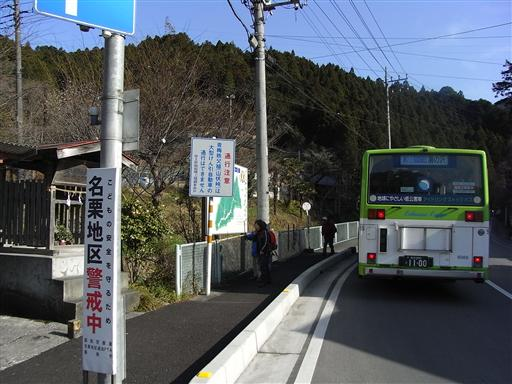
辺りの桜はすでに満開を迎えている。
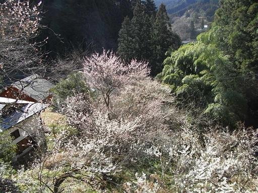
尾根道には白い石がたくさん転がっている。
武甲山と同じ石灰岩なのだろう。
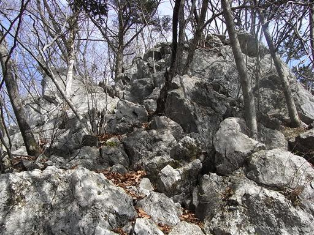
岩尾根上部からは奥武蔵の山々が良く見える。
左に見える山は以前登った伊豆ヶ岳と古御岳。
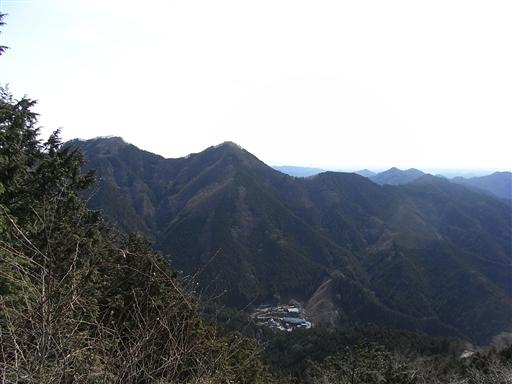
前武川岳に到着。ここで伊豆ヶ岳からの縦走路と合流する。
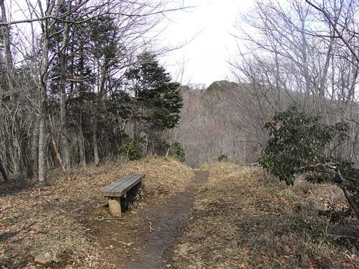
見事なまでに左右非対称な尾根道を登っていく。
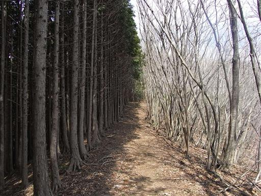
10:12 武川岳山頂到着。標高1052m。
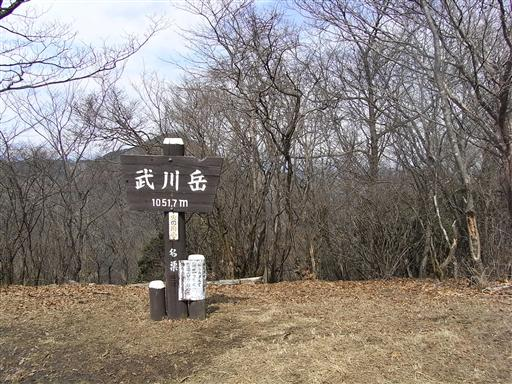
山頂は登山道の交差点でもあり、四方から人がやって来る。
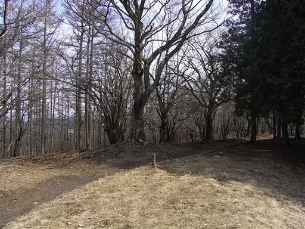
山頂からは一角だけ視界が開けるが、展望はさほどよくない。
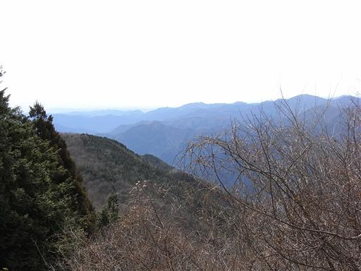
武川岳から二子山への縦走路を歩く。
ここは奥武蔵の手軽な縦走路としてよく歩かれている。
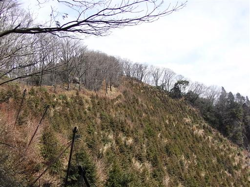
焼山に到着する。武川岳と二子山の間にある小ピークだが非常に展望がよい。
ここで昼食をとることにする。
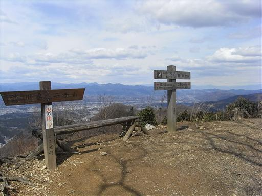
目の前には大きな武甲山が聳えている。
石灰岩採掘のため、山頂部が大きく削られているのがよく分かる。
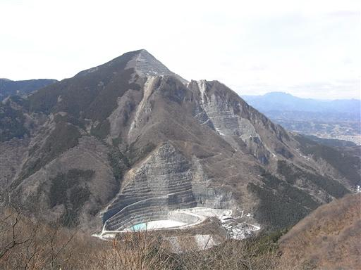
遠くには両神山が見えている。両神山は埼玉県のどの山に登っても良く目立つ。
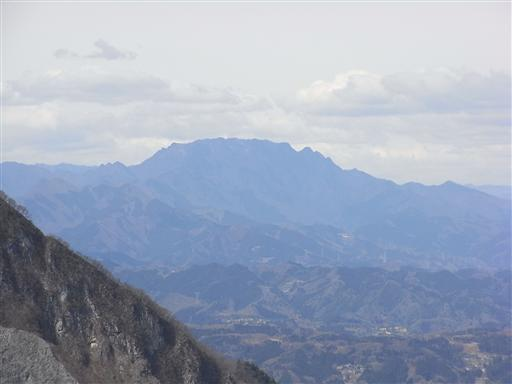
目の前には、これからめざす二子山も良く見えている。
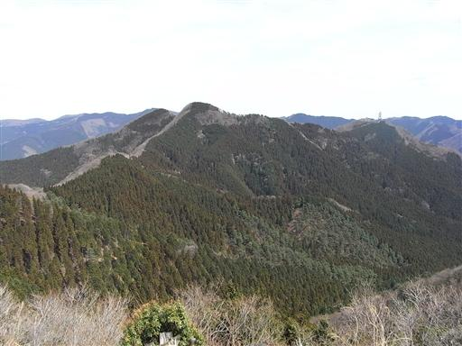
さほど山頂は広くないが、展望がよいので多くの人がここで昼食をとっている。
1時間ほど休憩し、出発する。
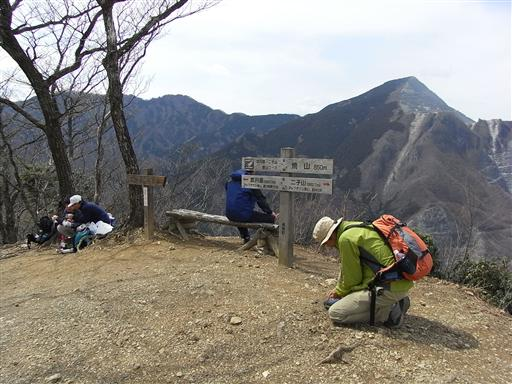
小さなアップダウンを繰り返すと、程なく二子山に到着する。標高883m。
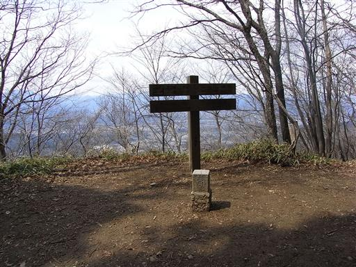
二子山からの下山道は、今にも落ちてきそうな大きな岩が散在している。
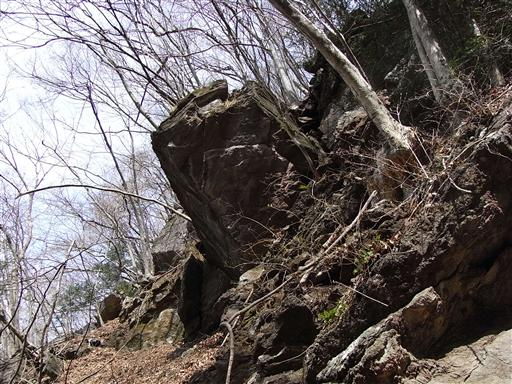
3本の大木に囲まれたところに小さな祠が祀られている。
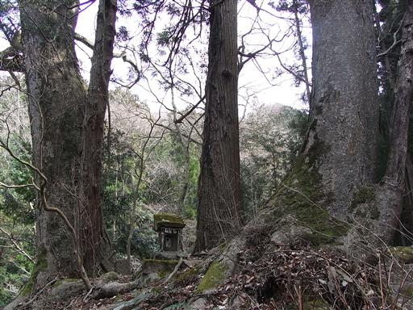
下山。眼下には荒川の支流・横瀬川が流れている。
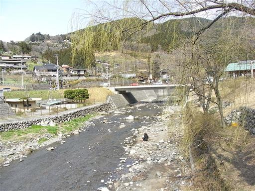
芦ヶ久保駅前には道の駅があり、そこそこ観光客が集まっている。
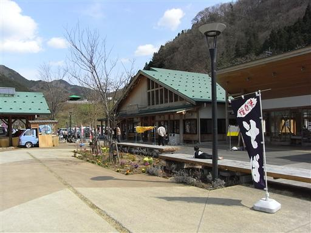
13:43 芦ヶ久保駅到着。標高315m。
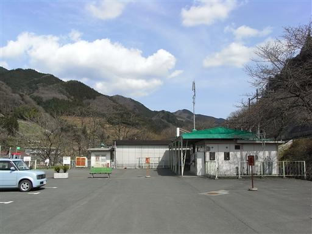